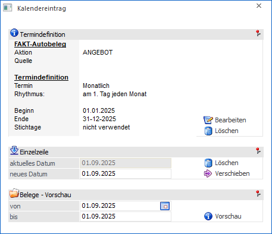
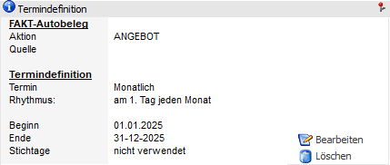
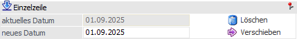
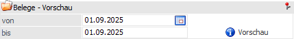

Wenn im WinLine Kalender (Datei - Kalender) ein Kalendereintrag des Typs "FAKT-Autobeleg" angewählt wird, so öffnet sich das Fenster "Kalendereintrag". In diesem kann der Eintrag kontrolliert und bearbeitet werden.

Termindefinition

Im Bereich "Termindefinition" wird die gesamte Terminserie, zu welcher der gewählte Termin gehört, bearbeitet.
Ø Bearbeiten
Mit dem Button "Bearbeiten" kann die Bearbeitung eines Termins mit allen Optionen durchgeführt werden.
Ø Löschen
Mit dem Button " Löschen" können alle vorgeschlagenen oder auch schon erzeugten Belege wieder gelöscht werden.
Einzelzeile

Im Bereich "Einzelzeile" wird der spezifische gewählte Termin bearbeitet.
Ø Löschen
Der Termin wird gelöscht.
Ø Verschieben
Der Termin (im Autobeleg=Beleg) kann auf ein neues Datum (Eingabefeld "neues Datum") verschoben werden.
Belege - Vorschau

In diesem Bereich kann eine Vorschau der zu erzeugenden Belege ausgegeben werden.
Ø Vorschau
Es wird das Fenster Aktionsplan Preview geöffnet. Über dieses kann eine Vorschau jener Belege ausgegeben werden, die bei diesem Termin erzeugt werden würden.
Hinweis
Wurde dieser Termin bereits durchgeführt, so wird das Belegmanagement geöffnet, in dem die bereits erzeugten Belege angezeigt werden.
Button
Ø Ende
Durch Anwahl des Buttons "Ende" bzw. der Taste ESC wird das Fenster geschlossen.